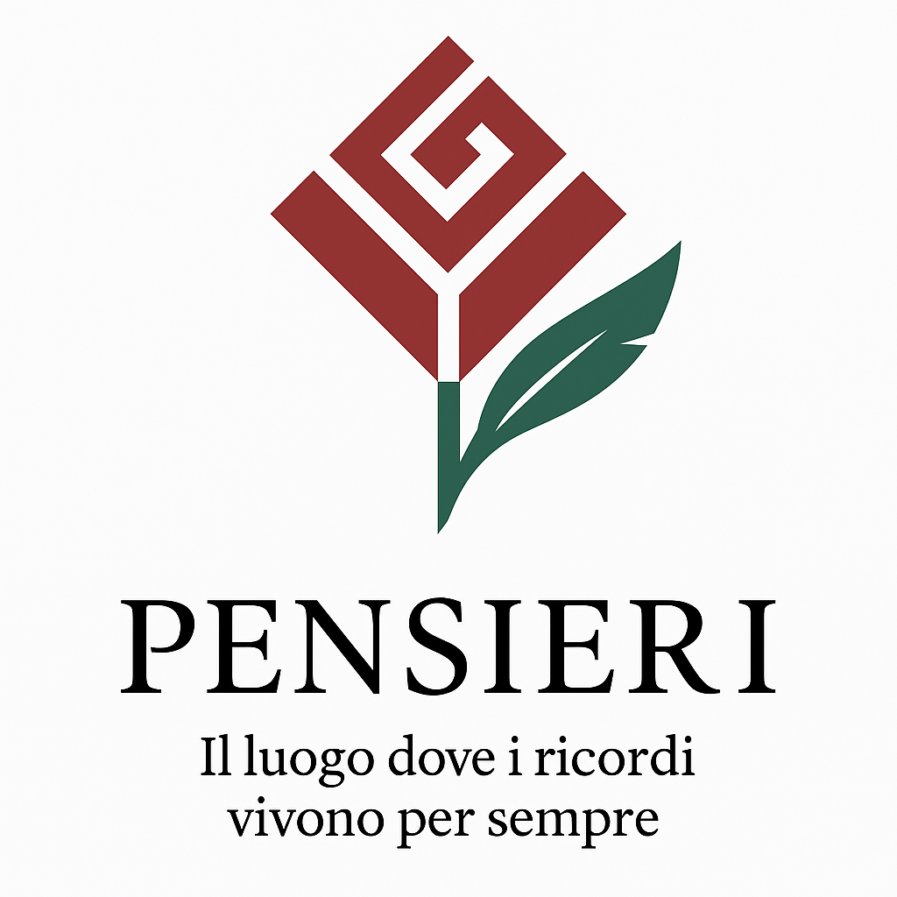

Un unico luogo sicuro
Richiesta preventivi chiara, contatti verificati e aggiornamenti sullo stato: tutto in modo trasparente.
OFI è l'ecosistema nazionale che ti accompagna con rispetto e chiarezza. Qui trovi imprese affidabili, professionisti che ascoltano e strumenti semplici per ricordare.
Un ecosistema di aiuto, fatto di persone e tecnologia.
Richiesta preventivi chiara, contatti verificati e aggiornamenti sullo stato: tutto in modo trasparente.
Rete di imprese funebri con profili completi e Marchio di Affidabilità Nazionale. Risposte puntuali, vicine a te.
Psicologi e professionisti per orientarti nelle scelte pratiche e nel prendersi cura del ricordo.
Il luogo dove i ricordi vivono per sempre. Condividi un pensiero del giorno o parole che possano essere di conforto ad altri. È semplice, rispettoso e libero.
Spazi semplici e rispettosi per onorare chi ami.
Pubblica un annuncio ufficiale e lascia che OFI ne custodisca la memoria.

Un luogo digitale dedicato: foto, parole, piccoli video e il segno di un posto del cuore da fissare sulla mappa.
Leggi i pensieri condivisi pubblicamente dalla comunità.
Spunti utili e riflessioni. L’anteprima è pubblica; il testo completo è disponibile dopo l’accesso.
Attiva la geolocalizzazione: vedrai imprese e figure di supporto intorno a te, evidenziate con luci eleganti.

Più visibilità, più fiducia, più contatti. Un ecosistema serio, con strumenti reali.
Marchio di Affidabilità, profilo pubblico avanzato, richieste di preventivo in arrivo, sigillo condivisibile.
Profilo verificato, geolocalizzazione e contatto chiaro per essere trovati quando serve, vicino alle famiglie.
Vetrina verso le imprese, presentazioni mirate e promozioni regionali con il servizio PLUS.
Pensieri, necrologi e anniversari, luogo della memoria, articoli completi e richieste preventivo tracciate.
Il Marchio di Affidabilità Nazionale OFI è riservato alle imprese aderenti e non sostituisce licenze o autorizzazioni dell’operatore.
Un’assistente discreta e sempre presente. Apri la guida passo‑passo, trova subito ciò che ti serve, oppure scrivimi una domanda.